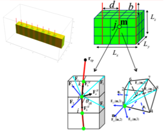
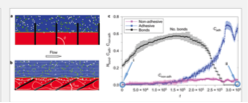
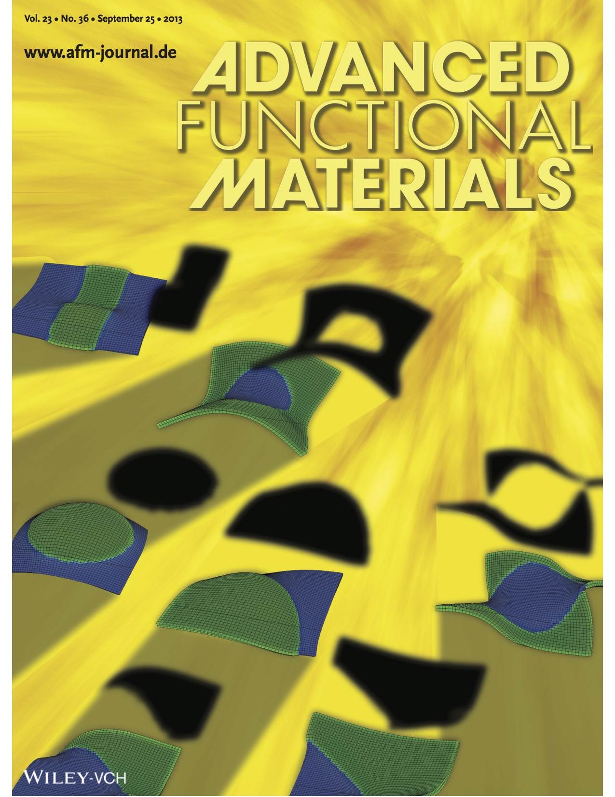
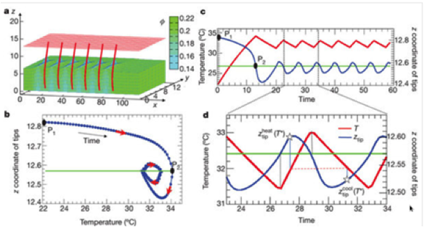
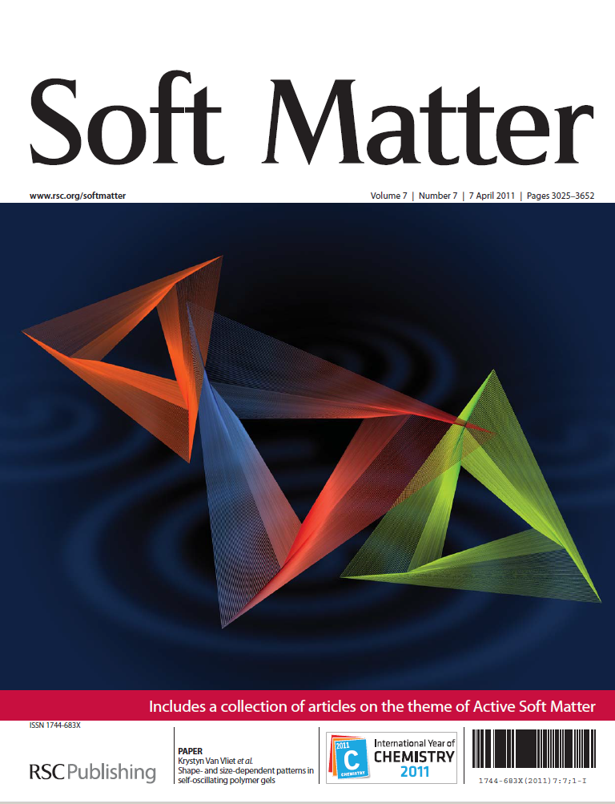
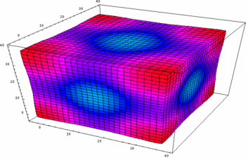
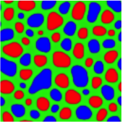

Publications
84. Tu, S., Choudhury, C. K., Luzinov, I., Kuksenok., O. "Recent advances towards applications of molecular bottlebrushes and their Conjugates”. Current Opinion in Solid State and Materials Science (2019)
83. Savchak, O., Morrison, T., Kornev, K.G. and Kuksenok, O. Controlling deformations of gel-based composites by electromagnetic signals within the GHz frequency range. Soft matter, 14(43), pp.8698-8708 (2018)
82. Schiller, U.D. and Kuksenok, O., 2018. "Lattice-Boltzmann Modelling of Multicomponent Systems: An Introduction." Reviews in Computational Chemistry, 31, p.1. John Wiley & Sons (2018)
81. Kuksenok, O., Liu, Y., Balazs, A.C. "Modeling Gel-based Artificial Cilia." Atlas of Cilia Bioengineering and Biocomputing, 149 (2018)
80. Choudhury, C.K., Tu, S., Luzinov, I., Minko, S., Kuksenok, O., "Designing Highly Thermostable Lysozyme-Copolymer Conjugates: Focus on Effect of Polymer Concentration" Biomacromolecules 19 (4), 1175-1188 (2018)
79. Xiong, Y., Dayal, P., Balazs, A.C., Kuksenok, O., "Phase Transitions and Pattern Formation in Chemo‐Responsive Gels and Composites" Israel Journal of Chemistry (2018).
78. Choudhury, C.K., Kuksenok, O., "Modeling dynamics of Polyacrylamide Gel in Oil-Water Mixtures: Dissipative Particle Dynamics Approach" MRS Advances, 1-6.
77. Kuksenok, O., Singh, A., Balazs, A., "Designing polymer gels and composites that undergo bio-inspired phototactic reconfiguration and motion. Bioinspiration & biomimetics 13 (3), 035004 (2018)
76. Yadavalli N.S., Borodinov, N., Choudhury, C.K., Quiñones-Ruiz, T., Laradji, A.M., Tu, S., Lednev, I.K., Kuksenok, O., Luzinov, I., and S. Minko. "Thermal Stabilization of Enzymes with Molecular Brushes" ACS Catalysis 7 (12), 8675-8684
75. Singh, A., Kuksenok, O., Johnson, J.A., Balazs, A.C., "Photo-regeneration of severed gel with iniferter-mediated photo-growth"Soft matter 13 (10), 1978-1987(2017)
74. Antoine Beziau, Awaneesh Singh, Rafael NL de Menezes, Hangjun Ding, Antonina Simakova, Olga Kuksenok, Anna C Balazs, Tomasz Kowalewski, Krzysztof Matyjaszewski. "Miktoarm star copolymers as interfacial connectors for stackable amphiphilic gels." Polymer 101, 406-414 (2016)
73. Yong, X., Snow, S.C., Kuksenok, O., Balazs, A.C., "Developing Hybrid Modeling Methods to Simulate Self-Assembly in Polymer Nanocomposites", Self-Assembling Systems: Theory and Simulation, 20 (2016).
72. Kuksenok. O., and Balazs, A.C., “Stimuli-responsive behavior of composites integrating thermo-responsive gels with photo-responsive fibers”, Mater. Horiz., DOI: 10.1039/C5MH00212E (2016)
Materials that could be reconfigured multiple times into different shapes with the use of different stimuli could dramatically impact manufacturing processes. As a step toward creating such useful, adaptive materials, we use computational modeling to design a composite that integrates a thermo-responsive polymer gel and photosensitive fibers. The gel displays a lower critical solution temperature (LCST), and thus, shrinks at elevated temperatures. The elastic fibers are functionalized with spirobenzopyran (SP) chromophores, which become hydrophobic under blue light. If these chromophores are uniformly distributed in this LCST gel (without the embedded fibers), then both light and heat produce the same effect on the sample, causing the gel to undergo a uniform collapse. When the SP-functionalization is confined to fibers that are embedded in the gel, the material displays distinctly different behavior in the presence of light and heat. In particular, samples anchored to a surface bend in one direction when illuminated and in the opposite direction when heated. When the sample is detached from the surface, then the composites shrink like an accordion when heated and bend like a caterpillar when illuminated. Common to both the tethered and untethered samples, one material displays a distinct response to the different stimuli. Hence, our findings indicate how a given sample can be fashioned into different shapes through the use of separate stimuli. Overall, our results point to a robust method for controllably reconfiguring the morphology of compliant composites and amplifying the effects of external environmental cues (light or temperature) on the behavior of these systems.

71. Liu, Y., Yong, X., McFarlin IV, G.T., Kuksenok. O., Aizenberg, J., and Balazs, A.C., “Designing a gel–fiber composite to extract nanoparticles from solution,” Soft Matter, DOI: 10.1039/C5SM01719J (2015).
70. Liu, Y., McFarlin IV, G.T., Yong, X., Kuksenok. O., and Balazs, A.C., “Designing Composite Coatings That Provide a Dual Defense against Fouling,” Langmuir, 31 7524-7532 (2015)

69. Kuksenok, O., and Balazs, A.C., “Designing Dual-functionalized Gels for Self- reconfiguration and Autonomous Motion,” Scientific Reports, 5, 9569 (2015)
Human motion is enabled by the concerted expansion and contraction of interconnected muscles that are powered by inherent biochemical reactions. One of the challenges in the field of biomimicry is eliciting this form of motion from purely synthetic materials, which typically do not generate internalized reactions to drive mechanical action. Moreover, for practical applications, this bio-inspired motion must be readily controllable. Herein, we develop a computational model to design a new class of polymer gels where structural reconfigurations and internalized reactions are intimately linked to produce autonomous motion, which can be directed with light. These gels contain both spirobenzopyran (SP) chromophores and the ruthenium catalysts that drive the oscillatory Belousov-Zhabotinsky (BZ) reaction. Importantly, both the SP moieties and the BZ reaction are photosensitive. When these dual-functionalized gels are exposed to non-uniform illumination, the localized contraction of the gel (due to the SP moieties) in the presence of traveling chemical waves (due to the BZ reaction) leads to new forms of spontaneous, self-sustained movement, which cannot be achieved by either of the mono-functionalized networks.
68. Shastri A., He, X., Mc Gregor, L., Liu, Y., Mujica, M., Vasquez, Y., Bhattacharya, A., Ma, Y., Aizenberg, M., Kuksenok, O., Balazs, A.C., and Aizenberg, J., “An aptamer-functionalized chemomechanically modulated biomolecule catch-and-release system,” Nature Chemistry,7(5) 447-454 (2015)
67. Yong, X., Kuksenok, O., and Balazs, A.C., “Modeling Free Radical Polymerization Using Dissipative Particle Dynamics,” Polymer, 72 (18), 217–225 (2015)
66. Yong, X., Simakova, A., Averick, S., Gutierrez, J., Kuksenok, O., Balazs, A.C., Matyjaszewski, K., “Stackable, Covalently-Fused Gels: Repair and Composite Formation,” Macromolecules, 48 (4), 1169–1178 (2015)
65. Kuksenok, O., Deb, D., Yong, X., and Balazs, A.C, “Designing Biomimetic, Reactive Polymer Gels,” Materials Today, 17 (10) 486–493 (2014)
64. Deb, D., Kuksenok, O., and Balazs, A.C., “Using Light to Control the Interactions between Self-rotating Assemblies of Active Gels,” Polymer, 55 (23) 5924–5932 (2014)
63. Kuksenok, O., “Chemical Synthesis in Small Spaces”, Physics, 7, 4 (2014)
62. Kuksenok, O., Deb, D., Dayal, P., and Balazs, A.C., “Modeling ChemoResponsive Polymer Gels,” Annual Review of Chemical and Biomolecular Engineering, 5 (2014) 35-54. -3-
61. Deb, D., Kuksenok, O., Dayal, P., and Balazs, A.C., “Forming self-rotating pinwheels from assemblies of oscillating polymer gels,” Mater. Horiz., 1, 125-132 (2014)
60. Kuksenok, O., and Balazs, A.C., “Modeling the Photoinduced Reconfiguration and Directed Motion of Polymer Gels,” Advanced Functional Materials, 23 (36), 4601-4610, (2013)
59. Yong, X., Kuksenok, O., Matyjaszewski, K., and Balazs, A.C., “Harnessing Interfacially-Active Nanorods to Regenerate Severed Polymer Gels,” Nano Letters 13, 6269-6274, (2013)
58. Dutt, M., Kuksenok, O., and Balazs, A.C., “Nano-pipette directed transport of nanotube transmembrane channels and hybrid vesicles,” Nanoscale, 5, 9773-9784 (2013)
57. Liu, Y., Kuksenok, O., and Balazs, A.C., “Using Light To Guide the Motion of Nanorods in Photoresponsive Binary Blends: Designing Hierarchically Structured Nanocomposites,” Langmuir, 29 (41), 12785-12795 (2013)
56. Kuksenok, O., Dayal, P., Bhattacharya, A., Yashin, V.V., Deb, D., Chen, I.C., Van Vliet, K.J., and Balazs, A.C, “Chemo-responsive, self-oscillating gels that undergo biomimetic communication,” Chem. Soc. Rev., 42, 7257-7277 (2013)
55. Salib, I., Yong, X., Crabb E.J., Moellers, N.M., McFarlin IV, G.T., Kuksenok, O., and Balazs, A.C., “Harnessing fluid-driven vesicles to pick up and drop off Janus particles,” ACS Nano 7 (2), 1224-1238, (2013)
54. Yuan, P., Kuksenok, O., Gross, D.E., Balazs, A.C., Moore, J.S., and Nuzzo, R.G., ”UV patternable thin film chemistry for shape and functionally versatile selfoscillating gels,” Soft Matter 9 (4), 1231-1243, (2013)
53. Dayal, P., Kuksenok, O., and Balazs, A.C., “Reconfigurable assemblies of active, autochemotactic gels,” PNAS 110 (2), 431-436, (2013)
52. Liu, Y., Kuksenok, O., and Balazs, A.C., “Coassembly of nanorods and photosensitive binary blends: "combing" with light to create, periodically ordered nanocomposites,” Langmuir 29 (2), 750-760, (2013)
51. He, X., Aizenberg, M., Kuksenok, O., Zarzar, L.D., Shastri, A., Balazs, A.C., and Aizenberg, J., “Synthetic homeostatic materials with chemo-mechanochemical self-regulation,” Nature , 487, 214-218, (2012)
50. Ma, Y., Bhattacharya, A., Kuksenok, O., Perchak, D., and Balazs, A.C., “Modeling the Transport of Nanoparticle-filled Binary Fluids through Micropores,” Langmuir 28 (31), 11410-11421 (2012)
49. Yashin, V.V., Kuksenok, O., Dayal, P., and Balazs, A.C., “Mechano-chemical oscillations and waves in reactive gels,” Rep. Prog. Phys., 75, 066601 (2012)
48. Chen, I.C., Kuksenok, O., Yashin, V.V., Balazs, A.C., and Van Vliet, K.J., “Mechanical Resuscitation of Chemical Oscillations in Belousov-Zhabotinsky Gels,” Adv. Funct. Mater. 22(12), 2535-2541, (2012)
Polymeric hydrogels that exhibit autonomous, coupled chemical and mechanical oscillations are a unique example of synthetic, active soft matter. Here, we explore the effects of gel aspect ratio and absolute dimensions on pattern formation in hydrogels undergoing the Belousov-Zhabotinsky (BZ) reaction. We synthesize and analyze N-isopropylacrylamide gels containing covalently bound BZ catalyst and polyacrylamide-silica gel composites containing physically associated BZ catalyst. Through both experiments and computational simulations, we demonstrate that the oscillating chemical patterns within BZ gels can be altered by changing the shape and size of the gel, and that these patterns evolve over long timescales. In our simulations, we utilize an improved Oregonator model, which explicitly accounts for the total concentration of the catalyst grafted onto the polymer network. We find that the three-dimensional simulations of the BZ gels successfully reproduce patterns, oscillation periodicity, and catalyst concentration-dependence observed in experiments. Together, these findings validate our theoretical and computational approaches for modeling chemomechanical coupling in active, chemo-responsive gels, and enable future studies that exploit the shape- and size-confinement effects of self-oscillating reactions.
47. Epstein, I.R., Vanag, V.K., Balazs, A.C., Kuksenok, O., Dayal, P., and Bhattacharya, A., “Chemical Oscillators in Structured Media,” Acc. Chem. Res., 45 (12), 2160-2168 (2012)
46. Dayal, P., Kuksenok, O., Bhattacharya, A., and Balazs, A.C., “Chemicallymediated communication in self-oscillating, biomimetic cilia,” J. Mater. Chem., 22, 241-250, (2012) -4-
45. Kuksenok, O., Yashin, V.V., Kinoshita, M., Sakai,T., Yoshida, R., and Balazs, A.C. “Exploiting Gradients in Cross-link Density to Control the Bending and SelfPropelled Motion of Active Gels,” Journal of Materials Chemistry, 21, 8360-8371 (2011)
44. Dutt, M., Nayhouse, M., Kuksenok, O., Little S.R., and Balazs, A.C., “Modeling the Self-Assembly of Lipids and Nanotubes in Solution: Forming Vesicles and Bicelles with Transmembrane Nanotube Channels,” ACS Nano, 5, 4769-4782 (2011)
43. Dutt, M., Kuksenok, O., Nayhouse, M., Little S.R., and Balazs, A.C., “Interactions of End-functionalized Nanotubes with Lipid Vesicles: Spontaneous Insertion and Nanotube Self-organization,” Current Nanoscience, 5, 699-715, (2011)
42. Chen, I.C., Kuksenok, O., Yashin, V.V., Moslin, R.M., Balazs, A.C., and Van Vliet, K.J., “Shape- and Size-Dependent Patterns in Self-Oscillating Polymer Gels,” Soft Matter, 7, 3141-3146 (2011)
41. Dutt, M., Kuksenok, O., Little S.R., and Balazs, A.C., “Forming transmembrane channels using end-functionalized nanotubes,” Nanoscale, 3 (1), 240 – 250, (2011) 40. Yashin, V.V., Kuksenok, O., and Balazs, A.C., “Computational Design of Active, Self-Reinforcing Gels,” J. Phys. Chem. B, 114, (19), 6316-6322, (2010)
39. Dayal, P., Kuksenok, O., and Balazs, A.C., “Designing autonomously motile gels that follow complex paths,” Soft Matter, 6 (4), 768 (2010)
38. Kuksenok, O., Yashin, V.V., Dayal, P., and Balazs, A.C., ”Copying from nature: Designing adaptive, chemoresponsive gels,” Polymer Physics, 48 (24), 2533, (2010)
37. Yashin, V.V., Kuksenok, O., and Balazs, A.C., “Modeling Autonomously Oscillating Chemo-Responsive Gels,” Progress in Polymer Science, 35 (1-2), 155, (2010)
36. Kuksenok, O., Yashin, V.V., and Balazs, A.C., “Spatial confinement controls self-oscillations in polymer gels undergoing the Belousov-Zhabotinsky reaction,” Phys. Rev. E, 80, 056208 (2009)
35. Balazs, A.C., Kuksenok, O., and Alexeev, A., “Modeling the Interactions between Membranes and Inclusions: Designing Self-Cleaning Films and Resealing Pores,” Macromol. Theory Simul., 18 (1), 11–24 (2009)
34. Kuksenok, O., Yashin, V.V., and Balazs, A.C., ”Global signaling of localized impact in chemo-responsive gels,” Soft Matter, 5, 1835-1839 (2009)
33. Dayal, P., Kuksenok, O., and Balazs, A.C., “Using Light to Guide the SelfSustained Motion of Active Gels,” Langmuir, 25 (8), 4298–4301 (2009)
32. Dayal, P., Kuksenok, O., and Balazs, A.C., “Forming ordered structures in ternary, photosensitive blends through the use of masks,” Soft Matter, 5, 1205 - 1213 (2009)
31. Kuksenok, O., Yashin, V.V., and Balazs, A.C., “Three-dimensional model for chemoresponsive polymer gels undergoing the Belousov-Zhabotinsky reaction,” Phys. Rev. E 78, 041406 (2008).
We develop a computational model to capture the complex, three-dimensional behavior of chemoresponsive polymer gels undergoing the Belousov-Zhabotinsky reaction. The model combines components of the finite difference and finite element techniques and is an extension of the two-dimensional gel lattice spring model recently developed by two of us [V. V. Yashin and A. C. Balazs, J. Chem. Phys. 126, 124707 (2007)]. Using this model, we undertake the first three-dimensional (3D) computational studies of the dynamical behavior of chemoresponsive BZ gels. For sufficiently large sample sizes and a finite range of reaction parameters, we observe regular and nonregular oscillations in both the size and shape of the sample that are coupled to the chemical oscillations. Additionally, we determine the critical values of these reaction parameters at the transition points between the different types of observed behavior. We also show that the dynamics of the chemoresponsive gels drastically depends on the boundary conditions at the surface of the sample. This 3D computational model could provide an effective tool for designing gel-based, responsive systems.
30. Kuksenok, O., and Balazs, A.C., ”Gradient Sensing in Reactive, Ternary Membranes,” Langmuir, 24 (5), 1878 (2008). -5-
29. Dayal, P., Kuksenok, O., and Balazs, A.C., ”Using a Single Mask to Create Multiple Patterns in Three-Component, Photoreactive Blends,” Langmuir; 24(5) 1621 (2008)
28. Kuksenok, O., and Balazs, A.C., “Modeling Multi-Component Reactive Membranes,” Phys. Rev. E 75, 051906 (2007)
27. Kuksenok, O., Yashin, V.V., and Balazs, A.C., “Mechanically Induced Chemical Oscillations and Motion in Responsive Gels,” Soft Matter 3, 1138 (2007)
26. Kuksenok, O., Travasso, R.D.M., and Balazs, A.C., "Dynamics of ternary mixtures with photosensitive chemical reactions: Creating three dimensionally ordered blends," Phys. Rev. E 74, 011502 (2006)
Using computer simulations, we establish an approach for creating defect-free, periodically ordered polymeric materials. The system involves ABC ternary mixtures where the A and B components undergo a reversible photochemical reaction. In addition, all three components are mutually immiscible and undergo phase separation. Through the simulations, we model the effects of illuminating a three-dimensional (3D) sample with spatially and temporally dependent light irradiation. Experimentally, this situation can be achieved by utilizing both a uniform background light and a spatially localized, higher intensity light, and then rastering a higher-intensity light over the 3D sample. We first focus on the case where the higher-intensity light is held stationary and focused in a distinct region within the system. The C component is seen to displace the A and B within this region and replicate the pattern formed by the higher-intensity light. In effect, one can write a pattern of C onto the AB binary system by focusing the higher-intensity light in the desired arrangement. We isolate the conditions that are necessary for producing clearly written patterns of C (i.e., for obtaining sharp interfaces between the C and A/B domains). We next consider the effect of rastering a higher-intensity light over this sample and find that this light "combs out" defects in the AB blend as it moves through the system. The resulting material displays a defect-free structure that encompasses both a periodic ordering of the A and B domains and a well-defined motif of C. In this manner, one can create hierarchically patterned materials that exhibit periodicity over two distinct length scales. The approach is fully reversible, noninvasive, and points to a novel means of patterning with homopolymers, which normally do not self-assemble into periodic structures.
25. Travasso, R.D.M., Kuksenok, O., and Balazs, A.C., “Exploiting Photo-induced Reactions in Polymer Blends to Create Hierarchically Ordered, Defect-free Materials,” Langmuir 22(6), 2620-2628 (2006).
24. Kuksenok, O., Jasnow, D., and Balazs A.C., “Local control of periodic pattern formation in binary fluids within microchannels,” Phys. Rev. Lett. 95, 240603 (2005)
23. Travasso, R.D.M., Kuksenok, O., and Balazs, A.C., ”Harnessing Light to Create Defect Free, Hierarchically Structured Polymeric Materials,” Langmuir 21(24), 10912-10915 (2005).
22. Balazs, A.C., Verberg R., Pooley C.M., Kuksenok O., “Modeling the flow of complex fluids through heterogeneous channels,” Soft Matter 1 (1), 44-54 (2005).
21. Travasso, R.D.M., Buxton G.A., Kuksenok, O., Good, K., and Balazs, A.C., “Modeling the morphology and mechanical properties of sheared ternary mixtures,” J. Chem. Phys. 122, 194906 (2005).
20. Pooley, C.M., Kuksenok, O., and Balazs, A.C., “Convection-driven pattern formation in phase-separating binary fluids,” Phys. Rev. E 71, 030501 (2005).
19. Kuksenok, O., and Balazs, A.C., “Structures formation in binary fluids driven through patterned microchannels: effect of hydrodynamics and arrangement of surface patterns,” Physica D, 198 (3-4): 319-332 (2004).
18. Good, K., Kuksenok, O., Buxton, G.A., Ginzburg, V.V., and Balazs, A.C., “Effect of hydrodynamic interactions on the evolution of chemically reactive ternary mixtures,” J. Chem. Phys. 121 (12), 6052-6063 (2004).
17. Kuksenok, O., Jasnow, D., and Balazs, A.C., “Diffusive Intertwining of Two Fluid Phases in Chemically Patterned Microchannels,” Phys. Rev. E 68, 051505 (2003).
16. Kuksenok, O., Jasnow, D., Yeomans, J.M., and Balazs, A.C., “Periodic Droplet Formation in Chemically Patterned Microchannels,” Phys. Rev. Lett. 91, 108303 (2003).
15. Kuksenok, O., and Balazs, A.C., “Simulating the dynamic behavior of immiscible binary fluids in three-dimensional chemically patterned microchannels,” Phys. Rev. E 68, 011502 (2003).
14. Suppa, D., Kuksenok, O., Balazs, A.C., and Yeomans, J.M., “Phase separation of a binary fluid in the presence of immobile particles: A lattice Boltzmann approach,” J. Chem. Phys. 116 (14), 6305-6310 (2002). -6-
13. Kuksenok, O., Yeomans, J.M., and Balazs, A.C., “Using patterned substrates to promote mixing in microchannels,” Phys. Rev. E 65 (3), 031502 (2002).
12. Suppa, D., Kuksenok, O., Balazs, A.C. and Yeomans, J.M., “Effect of Stationary Particles on the Phase Separation of Binary Fluids,” Polymer Interfaces and Thin Films, Materials Research Society, Pittsburgh, 61 (2002).
11. Ouskova, E., Reznikov, Y., Shiyanovskii, S.V., Su, L., West, J.L., Kuksenok, O., Fran-cescangeli, O., and Simoni, F., “Photo-orientation of liquid crystals due to light-induced desorption and adsorption of dye molecules on an aligning surface,” Phys. Rev. E 64 (5), 051709 (2001).
10. Kuksenok, O., Yeomans, J.M., and Balazs, A.C., “Creating localized mixing stations within microfluidic channels,” Langmuir 17 (23), 7186-7190 (2001).
9. Kuksenok, O., and Shiyanovskii, S.V., “Surface control of dye adsorption in liquid crystals,” Mol.. Cryst. Liq. Cryst. 359, 427-438 (2001).
8. Fedorenko, D., Ouskova, E., Reznikov, Y., Shiyanovskii, S.V., Su, L., West, J.L., Kuksenok, O., Francescangeli, O., Simoni. F., ”Adsorption-driven Photoalignment of Dye-Doped Liquid Crystals,” Phys. Rev. E 63 (2), 021701 (2001).
7. Kuksenok, O., and Shiyanovskii, S.V., “Structural changes around a spherical particle in nematic,” Ukrainian Physical Journal, 43 (3), 305-312 (1998).
6. Kuksenok, O., and Shiyanovskii, S.V., “Structural transitions in nematic filled with colloid particles,” Mol. Cryst. Liq. Cryst., 321, 489-500 (1998).
5. Kuksenok, O., and Shiyanovskii, S.V., ”The radiation effect on the structural transitions in nematics with colloid particles,” Ukrainian Physical Journal, 43(8), 826-828 (1998).
4. Kuksenok, O., Ruhwandl, R.W., Shiyanovskii, S.V., and Terentjev, E.M., “Director structure around a colloid particle in a nematic liquid crystal,” Phys. Rev. E, 54, 5198-5204 (1996).
3. Kuksenok, O., and Shiyanovskii, S.V., ”Study of structures in heterogeneous system: nematic liquid crystal with spherical particles,” Ukrainian Physical Journal, 41(2), 190-192 (1996).
2. Kuksenok, O., Sugakov, V.I., and Shiyanovskii, S.V., “Conductivity of liquid crystals with donor and acceptor dopants under irradiation,” Ukrainian Physical Journal, 39 (6), 692-695 (1994).
1. Kuksenok, O., Sugakov, V.I., and Shiyanovskii, S.V., “On the mechanism of negative effect of ionizing irradiation on conductivity of liquid crystals,” Ukrainian Physical Journal, 37 (4), 589-594 (1992).